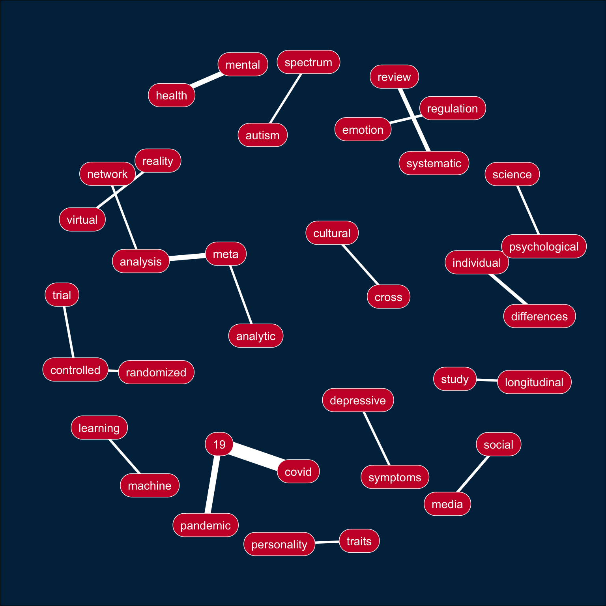

Appendix E — PsyArXiv
E.1 Data
PsyArXiv data from Day 27.
E.2 Ngrams
Here is a function that will extract any number of ngram.
Code
ngrams <- function(data, col, n = 2, sw = stop_words$word) {
word_cols <- paste0("word_", 1:n)
data %>%
unnest_tokens(ngram, {{col}}, token = "ngrams", n = n) %>%
mutate(ngram_id = row_number()) %>%
separate_rows(ngram, sep = " ") %>%
filter(!ngram %in% sw) %>%
group_by(ngram_id) %>%
filter(n() == n) %>%
mutate(word = word_cols) %>%
ungroup() %>%
pivot_wider(names_from = word, values_from = ngram) %>%
count(across(all_of(word_cols)), sort = TRUE)
}Look at the top 10 trigrams from a random 1000 entries.
| word_1 | word_2 | word_3 | n |
|---|---|---|---|
| covid | 19 | pandemic | 26 |
| ecological | momentary | assessment | 4 |
| mental | health | outcomes | 3 |
| post | traumatic | stress | 3 |
| 1 | registered | report | 2 |
| 19 | vaccination | intention | 2 |
| borderline | personality | disorder | 2 |
| cognitive | test | scores | 2 |
| convolutional | neural | network | 2 |
| corpus | based | study | 2 |
Calculate the bigrams for all titles.
E.3 Plot
Use the code from Day 17 to make a bigram plot.
Code
bigrams %>%
slice_max(order_by = n, n = 20) %>%
ggraph(layout = "kk") +
geom_edge_link(aes(width = n), color = "white", show.legend = FALSE) +
geom_node_label(aes(label = name), vjust = 0.5, hjust = 0.5,
fill = "#CA1A31", color = "white",
label.padding = unit(.5, "lines"),
label.r = unit(.75, "lines")) +
coord_cartesian(clip = "off") +
theme_void() +
theme(plot.margin = unit(rep(.5, 4), "inches"),
plot.background = element_rect(fill = "#012C4C"))
E.4 Add Image
Add the PsyArXiv logo using magick to crop the wikipedia logo and grid to rasterize it so it can be added as an annotation.